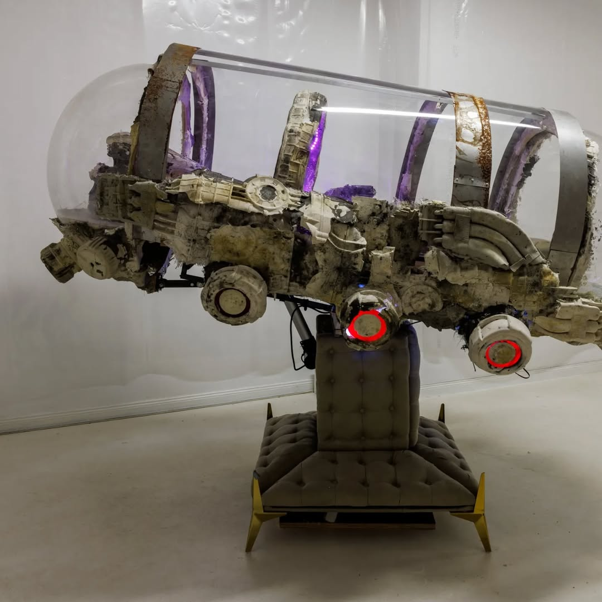
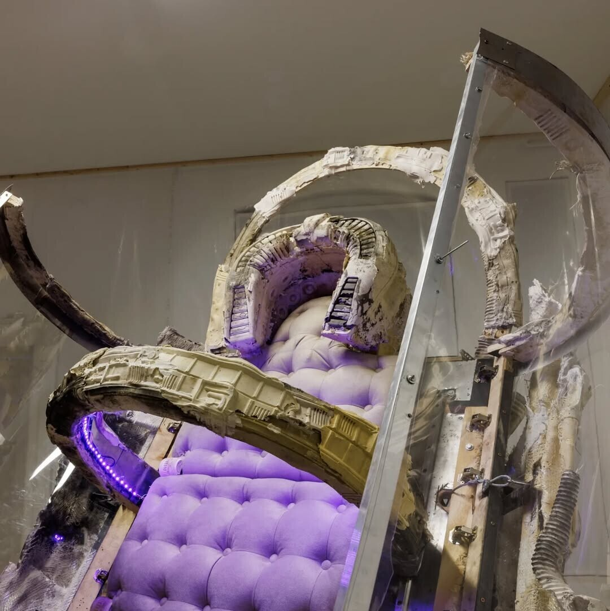

MedBed
2023

MedBed is an interactive sculpture inspired by the conspiracy myth of a medical device that can heal all illnesses and extend life. The QAnon movement claims such devices are kept by elite deep state members. In Johannes Büttner’s sculptural paraphrase, the bed becomes a dark, sardonic form—programmed to move in sync with scenes from the accompanying film, hinting at the deception of conspiracy propagandists.
View on Instagram
